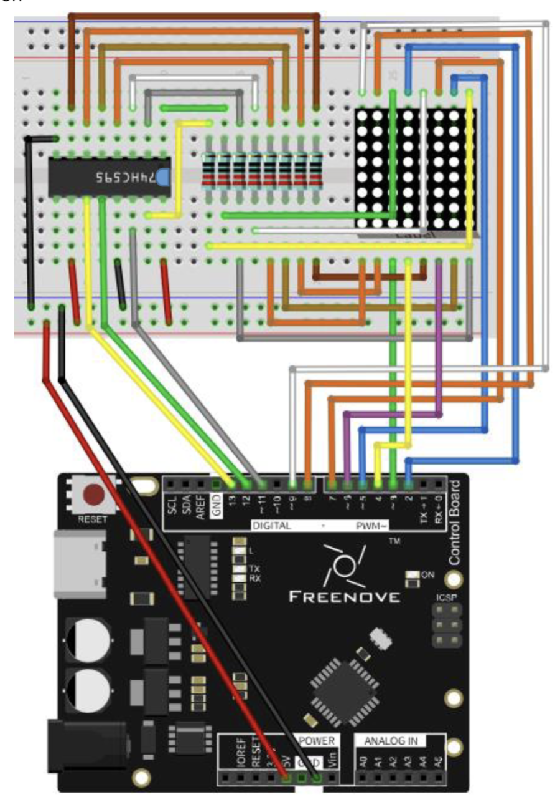
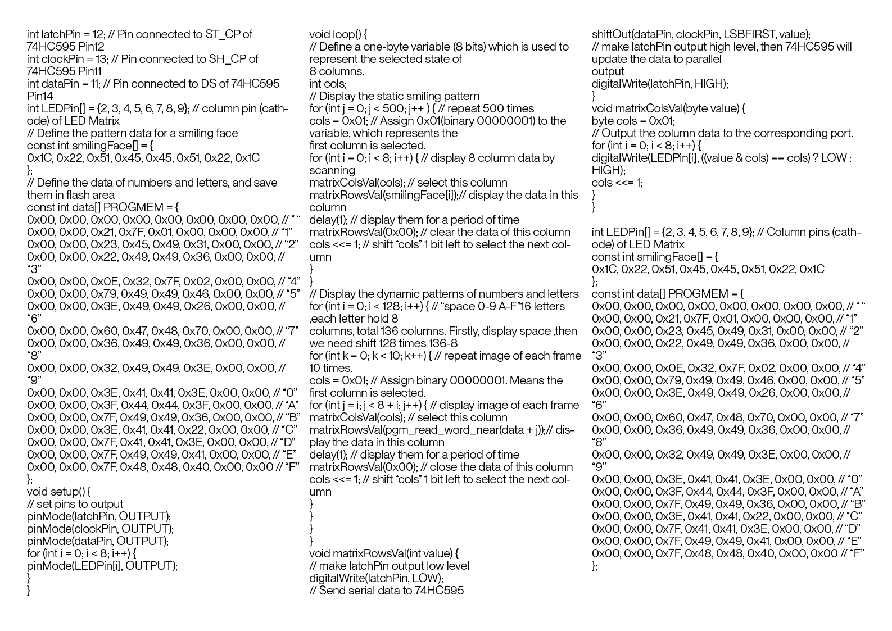

This was quite possibly the most challenging of all the sketches we did in the workshops, we were incredibly unsuccessful. We tried so hard to ensure it was neat, and organised, we had a systematic approach (or so we thought), and yet it still didn't work. We ensured that we had the breadboard the correct way, as to not mix up the positive and negative channels. We even re-did it twice, but were unable to make the connection work and have an output on the LED matrix component. Our peers next to us were successful and their breadboard was so messy, it was upsetting to say the least. If you are feeling game enough to try this yourself you will need the following: Arduino (obviously), breadboard (also obviously), roughly a million wires, a 74HC595 or equivalent (this is a microchip, and it is important that when placing it you place the end with a notch in it aligned to the blue dot in the diagram given), an LED matrix, 8 resistors (R220, or equivalent), and of course you will need patience.
The code for this one is so long, and complicated that my usual 'textarea placeholder' technique doesn't work to insert all the code, so, like previously, I have a screenshot of this code.
 